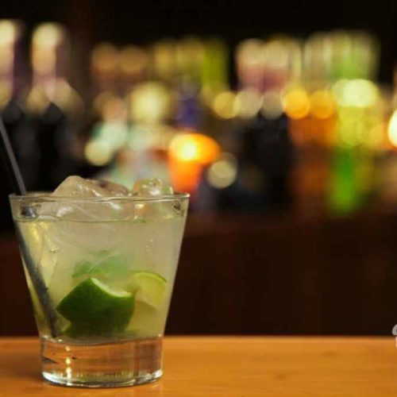

Caipirinha

Brazil's national cocktail is so refreshing and delicious!
The Caipirinha is the national cocktail of Brazil. Made with a sugar cane rum known as "cachaca",
limes and sugar, it's a sweet, yet tart taste of South America.
Ask your liquor store to order cachaca for you if they don't stock it, there's no substitute.
Ingredients
- 1/4 lime, quartered
- 1 teaspoon white sugar
- 2 1/2 fluid ounces cachaca
- 1 cup ice cubes
Steps
- In a large rocks glass, squeeze and drop in 2 eighths of lime
- Add sugar, crush and mix with a spoon
- Pour in the cachaca and plenty of ice. Stir well!
Return to main page